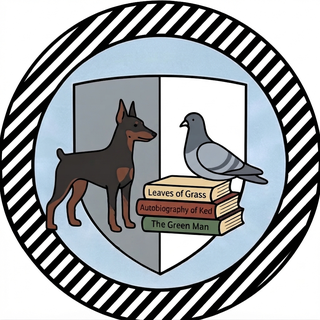

Hi, I’m Corrine (rhymes with green).
I’m a product leader based in NYC with expertise in building and scaling digital products. My work sits at the intersection of strategy and execution — shaping complex problems into products people actually use.
You can view my work experience or connect with me on LinkedIn.
You can read my writing on corrinely.com.
In my free time, you’ll find me exploring Fort Greene Park with my dog, or volunteering at the Wild Bird Fund.
Currently Reading


Ladi Dadi, bff since 2020.